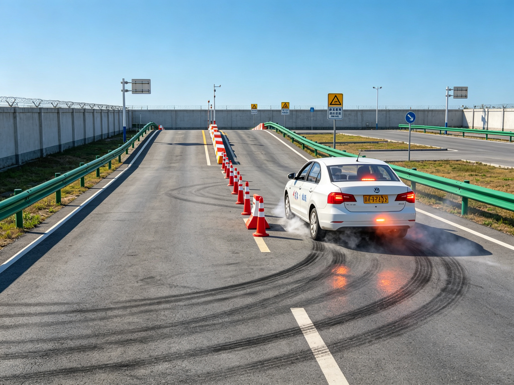
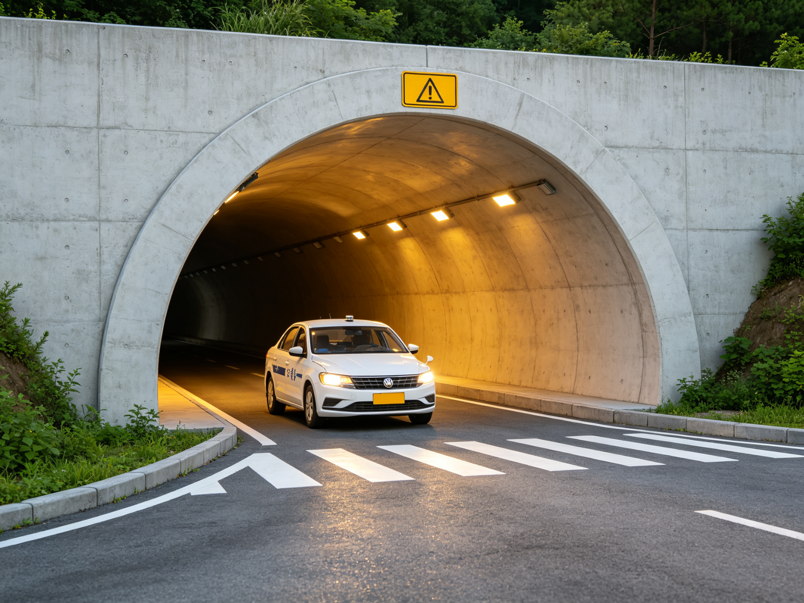
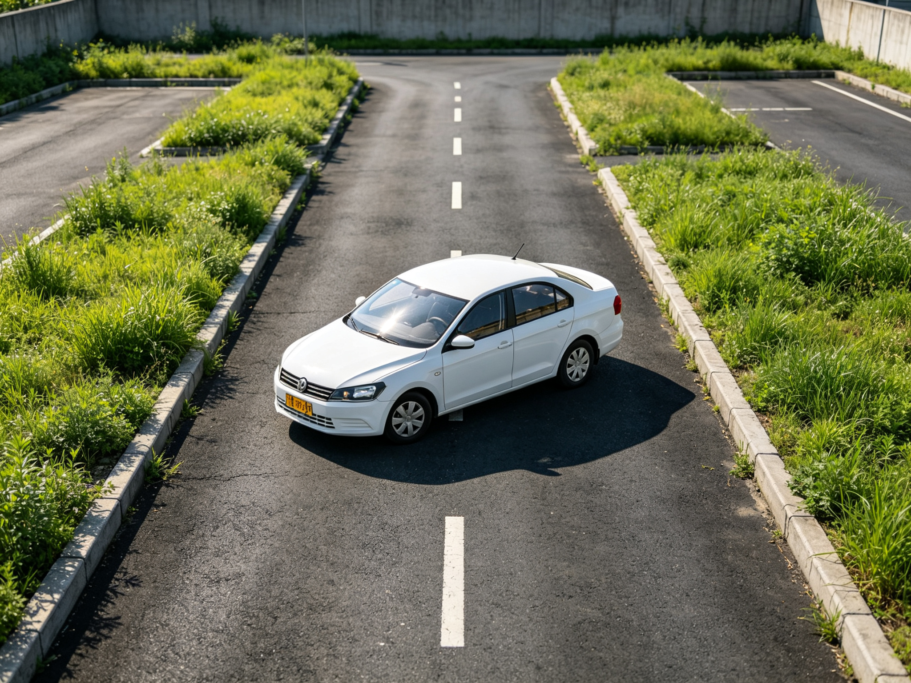
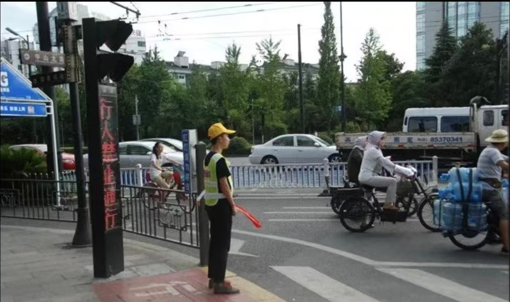

【重磅】驾考新规10月1号实行，科目二调整及智驾纳入驾考！
驾考新规2026年10月1日起正式施行，智驾纳入驾考！
不考驾照，车辆由自动驾驶也不能开车！
10月1日起，科目二新增窄路掉头、模拟紧急情况、模拟隧道行驶、模拟高速公路等项目。
申领驾驶证前，需完成规定时长的路口文明交通志愿站岗服务。
近期，公安部交通管理局围绕道路交通安全管理与驾考制度改革作出重要部署， 新一轮驾考改革将于2026年10月1日起正式施行。 为帮助各驾校及学员准确理解政策要点，武汉车管所现就科目二考试项目调整、 驾考站岗要求、驾驶人责任主体认定， 以及智能驾驶辅助功能纳入驾考培训等内容进行权威解读，请各驾校提前做好培训计划调整。
01 科目二新规旧规对比
根据最新驾考标准，自2026年10月1日起，科目二在保留原有五项基础考试内容的基础上， 新增四项模拟场景考试项目，全面检验学员在复杂路况下的判断力与操控能力。 考试项目、评判标准、合格要求均按新规执行，10月1日前已预约的考试仍按原标准进行。 对比如下：
| 旧规 | 新规 |
|---|---|
| 坡道起步 | 坡道起步 |
| 侧方停车 | 侧方停车 |
| 倒车入库 | 倒车入库 |
| 曲线行驶 | 曲线行驶 |
| 直角转弯 | 直角转弯 |
| / | 窄路掉头 新增 |
| / | 模拟紧急情况 新增 |
| / | 模拟隧道行驶 新增 |
| / | 模拟高速公路 新增 |
02 科目二新增项目详解
以下新增项目将随2026年10月1日驾考改革同步启用， 重在考察学员对车身位置的判断、特殊场景下的操作规范，以及遇突发情况时的正确处置。 各驾校应在此前完成场地适配与教学调整，学员务必结合场地练习，逐项过关。
一、窄路掉头

从名称上就能明白这项考试的核心要求——在狭窄道路上完成掉头。 但对初学者来说，难度并不小：既要在有限空间内完成转向，又要保证车轮不压线、车身不越界。 窄路掉头主要考察学员对车身宽度、前后轮轨迹以及转向时机的综合把控能力。
练习时建议分步进行：先熟悉场地宽度与车辆转弯半径的关系，再掌握"打方向—观察—回正"的节奏， 最后在限时条件下完成连贯操作。挂科多因压线、中途停车过久或转向不足导致需要多次进退， 学员必须加大练习量，把空间感练扎实。
二、模拟紧急情况

模拟紧急情况旨在考察学员遇突发状况时的应急处置能力，例如前方突然出现障碍物、 行人闯入、车辆故障警示等场景。考试时系统会给出相应提示，学员需按规范及时采取减速、 停车、开启危险报警闪光灯等措施，并保持冷静、操作有序。
该项挂科常见原因包括：反应迟缓、操作顺序错误、未按规定使用灯光或停车位置不当。 培训中应反复演练标准处置流程，做到"看清—判断—操作"一气呵成， 切忌慌乱中出现猛打方向、猛踩制动等危险动作。
三、模拟隧道行驶

模拟隧道行驶主要考察学员进出隧道、隧道内行驶时的灯光使用与车速控制能力。 进入隧道前应开启前照灯、示廓灯等规定灯光，保持安全车距与稳定车速； 驶出隧道后按要求关闭相关灯光。灯光使用错误、车速过高或过低、未保持安全距离， 都是常见扣分点。
隧道场景光线变化大、空间相对封闭，对学员的观察与预判要求更高。 建议在培训中专门安排"进洞—洞内—出洞"三段式练习，把灯光切换时机和油门配合练熟， 形成固定操作习惯后再参加正式考试。
四、模拟高速公路（停车取卡）

该项目相对基础，但考试过程中主要考察学员两点： 一是准确找到取卡位置并完成停车取卡，取卡过程中车辆不能熄火； 二是取卡时不得解开安全带。 不少学员因停车距离没有掌握好，车体与收费杆（桩）距离过远，够不到卡片， 于是解开安全带去取卡——这属于错误操作，一经发现将按不合格处理。
只要把停车位置练准，保证伸手可及且发动机不熄火，同时全程系好安全带， 这两点掌握扎实后，通过该项目一般问题不大。练习时可在场地反复体会"靠边—停稳—取卡—起步"的连贯动作。
03 责任主体还是驾驶人
随着智能网联汽车快速发展，辅助驾驶功能日益普及。 不少学员和群众存在误解，以为开启"智驾"后就可以放松甚至脱手脱眼。 对此，公安部交通管理局予以明确澄清。 相关要求在2026年10月1日驾考改革后将纳入培训与考试内容。
公安部交通管理局负责人表示：
- 目前市面上车辆所搭载的所谓"智驾"功能，本质上属于辅助驾驶， 并非完全意义上的自动驾驶。驾驶人始终是车辆运行过程中的安全责任主体。
- 辅助驾驶系统只能在特定条件下分担部分驾驶任务， 不能替代驾驶人对道路环境的持续观察与判断。 开启辅助功能后，驾驶人仍须双手可控、双眼可观、随时准备接管车辆。
- 驾驶人在使用辅助驾驶功能时，严禁脱手操作、观看手机、瞌睡等分心行为。 因未保持对车辆有效控制而发生交通事故的，将依法承担相应的民事、行政乃至刑事责任。
04 智驾纳入驾考
完善配套法规
推动《中华人民共和国道路交通安全法》等法律法规修订完善， 进一步明确0级至2级辅助驾驶"人机共驾"模式下，驾驶人、生产企业等各方的权利义务与法律责任， 引导企业提升系统安全可靠性，明确安全技术标准，为智能化交通管理提供法治保障。
智驾纳入驾考
为加强管理，公安部将把车辆智能化功能及正确使用要求纳入机动车驾驶人考试和培训内容， 并随2026年10月1日驾考改革同步推进。 使新领证驾驶人从一开始就树立正确的辅助驾驶使用观念， 掌握人机协同安全驾驶的基本技能与操作规范，杜绝"会开辅助却不懂责任"的情况。
各驾校应在10月1日改革实施前，在理论教学中增加智能驾驶辅助功能相关知识点， 在实操培训中引导学员了解车辆智能功能的边界与接管要求， 并强化"驾驶人责任主体"意识，杜绝过度依赖辅助驾驶。
05 驾考站岗：路口文明交通志愿服务

为进一步增强机动车驾驶人特别是初学驾驶人的交通安全意识， 培养文明交通习惯，自2026年10月1日起，部分地区在驾驶证申领过程中， 要求学员在正式取得驾驶证前，到指定路口完成规定时长的文明交通志愿站岗服务。
驾考新规将于10月1日正式施行，请各驾校及学员提前做好准备。 站岗期间，学员须身着反光背心、佩戴标识，在交警或协管员指导下， 于十字路口协助维护行人、非机动车通行秩序，引导市民遵守信号灯、走斑马线， 切实感受路口交通运行规律，树立"知危险、会避险"的安全理念。
站岗要求
- 按驾校或车管所通知，在指定时间段到指定路口报到， 不得迟到、早退或擅自更换站岗地点。
- 站岗时应穿着统一发放的反光背心，举止文明， 不参与与志愿服务无关的活动，不玩手机、不闲聊。
- 遇机动车、行人不按规定通行时，以劝导为主， 不得与群众发生争吵或冲突，遇特殊情况及时报告现场管理人员。
- 站岗时长达到规定要求后，由现场负责人登记确认， 方可视为完成该项服务；未完成站岗可能影响后续考试或领证进度。
请各驾校在10月1日改革实施前向学员做好站岗说明与组织安排，确保学员知悉要求、按时参与， 把路口站岗真正当作一次生动的交通安全实践课。
2026年10月1日起，驾考新规正式施行。如有疑问，请咨询所属驾校，或拨打交管服务热线 12123。
本页面由武汉车管所发布，仅供政策宣传参考，具体以官方最新规定为准。